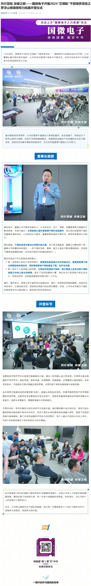
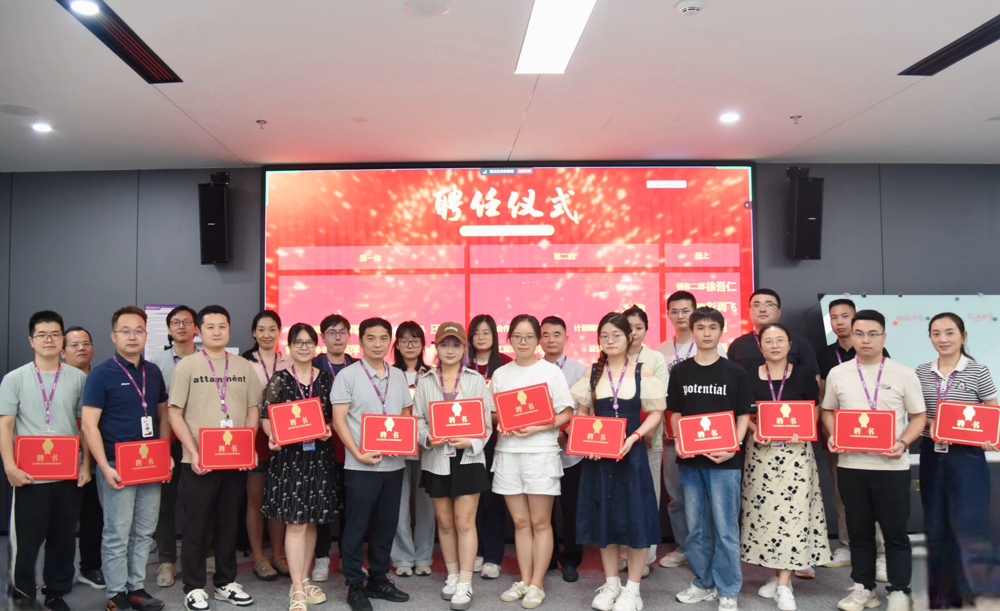
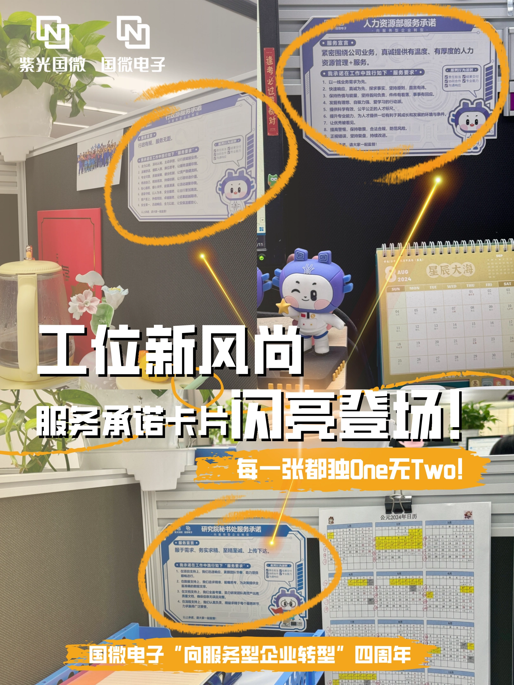
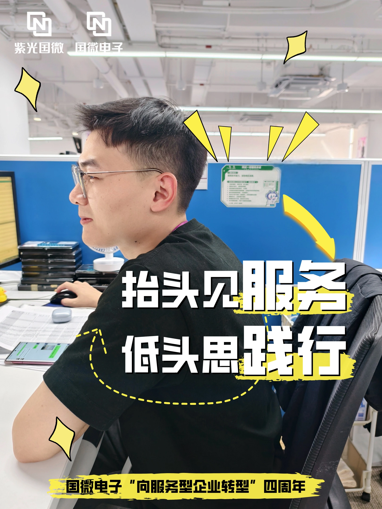
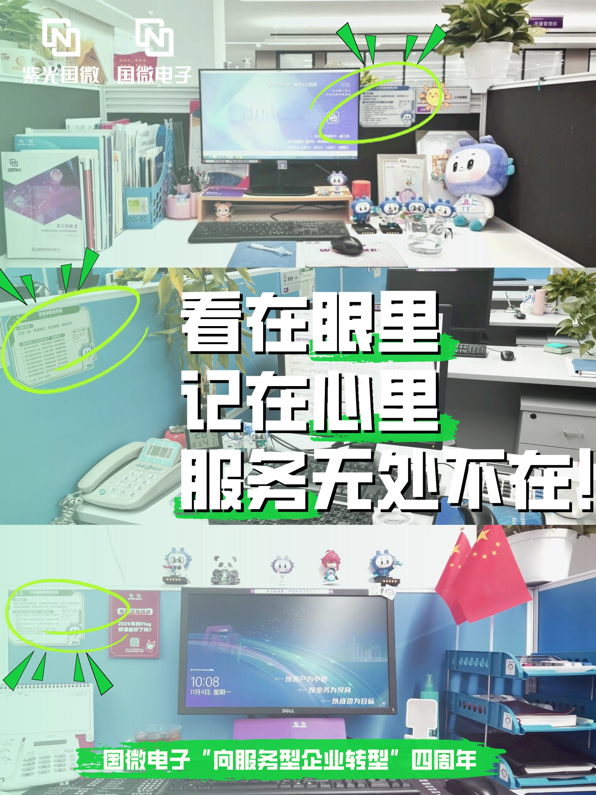
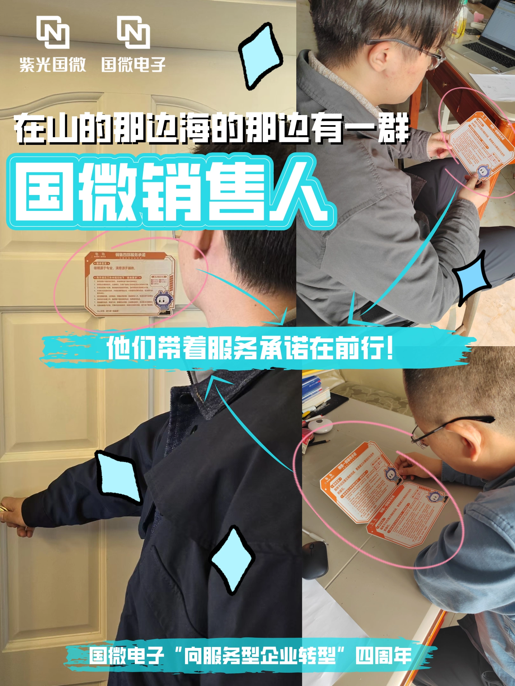
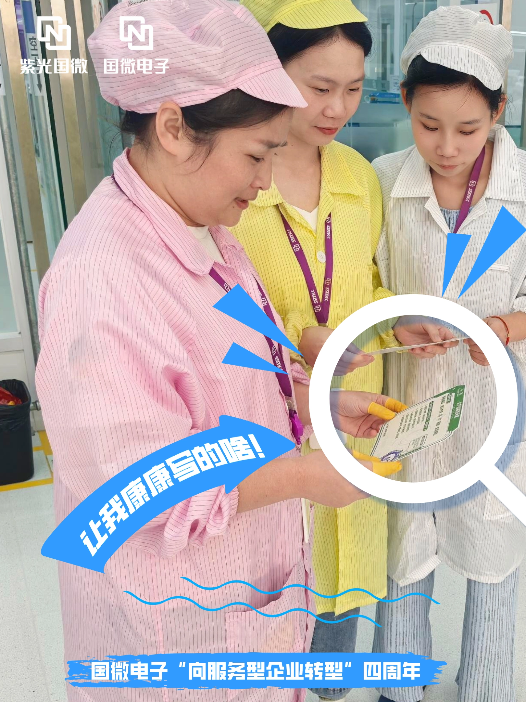
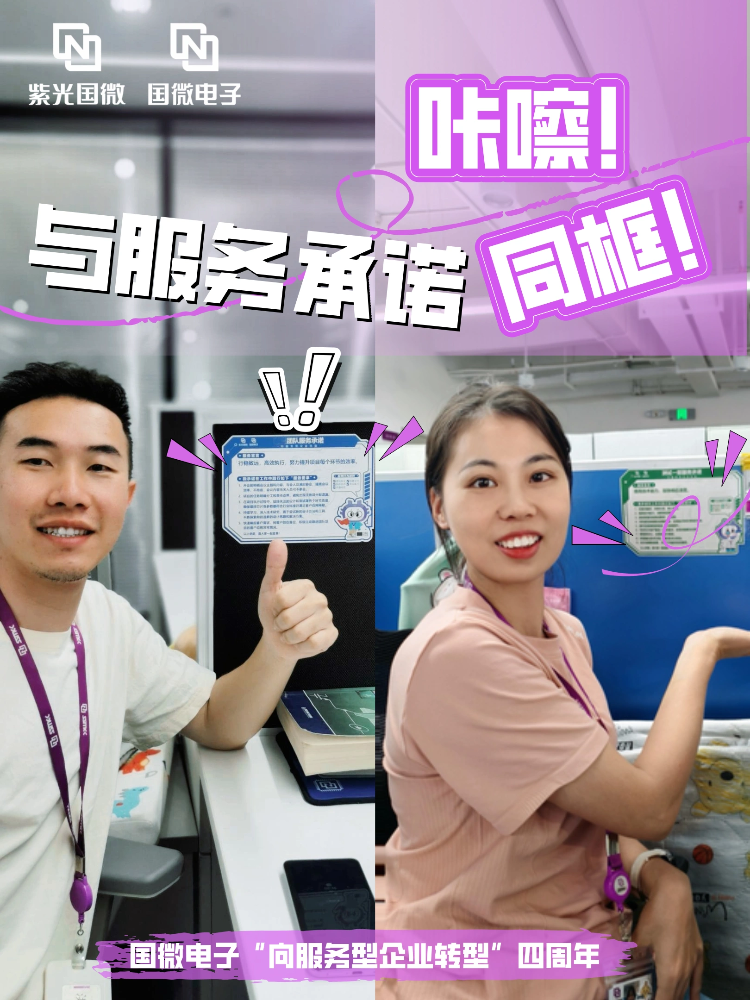

01之前
03
FROM ORGANIZATION TO CONTENT
把组织动作，
转化成员工能够理解的内容
转化成员工能够理解的内容
国微电子 HR与组织重点项目传播
2024年5月至12月，以微信公众号为主要传播阵地，长期参与招聘、新员工、培训、干部培养、服务文化及组织重点工作的内容传播。
高频生产并没有让所有内容变成同一种东西。真正需要不断判断的是：这件事情为什么需要被讲，以及它现在应该怎么讲。
155CONTENTS
MAY — DEC 2024
41新闻
39培训
26招聘
22服务
文化
文化
27其他


不同故事
CASE OVERVIEW
不同的组织动作，
需要不同的传播方式
高频的传播动作在不同程度表达着组织。
生命周期招聘 / 新员工
→现场传播干部拓展
→内容转译提质增效 / 管理导向
→文化落地服务四周年
招聘需要建立期待；新闻需要及时发生；现场活动需要进入现场；管理动作需要解释；业务内容需要被理解；文化需要落回具体行为。
01 / LIFECYCLE COMMUNICATION
让一个组织项目，
不只发生在当天
应届生入职与校园招聘并不是一个单一节点。传播也不只是发布一条消息，而是随着项目推进，持续回答不同的问题。
02进行中
03之后
02 / 24 HOURS
当内容需要
马上发生
北京大学专场宣讲临时需要一条面向本校候选人的“师兄师姐说”视频。
从需求开始，在约24小时内完成内部校友联系、沟通与内容确认、现场拍摄、素材整理、剪辑制作，并交付宣讲团队。
联系→确认→拍摄→剪辑→交付
好的内容并不永远意味着“慢”。真正重要的是判断：什么时候值得打磨，什么时候必须先让事情准时发生。
24小时
北大专场
北大专场
“师兄师姐说”校园招聘内容视频格式：H.264 / 854 × 480 / 06:48
04 / TRANSLATE THE ABSTRACT
当组织语言
本身并不好讲
有些传播并不围绕活动，而是帮助组织解释：为什么接下来要这样工作。
A
业务行动
提质增效
“提质增效”围绕不同部门提升工作质量、产品质量，提高效率与降低成本展开，是一个非常接近业务的传播题目。
当时的表达更多按照“部门做了什么、完成了什么动作、取得了什么成果”组织。信息完整，却也因此容易接近一份部门工作报告。
B
管理导向
管理导向与组织动作
有些传播不围绕活动，而是帮助组织解释：为什么接下来要这样工作。
如果重新做一次
从一个具体问题开始
原来的问题是什么？↓这个问题造成了什么成本？↓谁改变了什么工作方式？↓最终质量、效率或协作发生了什么变化？
业务传播并不是信息越完整越好。需要先让人理解：为什么这件事情值得被改变。05 / CULTURE IN PRACTICE
当抽象文化准则
开始进入部门工作
国微电子“向服务型企业转型”进入第四年后，服务文化建设开始从统一理念进一步向不同部门的真实工作场景下沉。
国微电子 / 四周年凝聚服务共识
深化服务践行
深化服务践行
公司已有五项《服务行为准则》：
责任担当 · 结果交付 · 协同合作 · 专业能力 · 沟通响应
公司级准则
公司级准则，只有进入具体工作，才会开始产生差异。
四周年尝试进一步把公司级准则带入不同部门的真实工作场景。
08 / FROM GUIDELINES TO WORK
从公司准则，
到部门工作
部门从业务链核心价值出发，形成服务宣言和服务要求，并让内容保持简洁化、业务化、结果化。
01公司级准则公司级服务行为准则
↓02部门语境这个部门在业务链上的核心价值是什么？
↓03服务宣言部门服务宣言
↓04行为要求需要做到哪些关键结果？
↓05工作实践用部门自己的方式推动实践

文化共创 / 过程
文化使者共创会
→ 部门文化共识工作坊
→ 服务文化深化实践
→ 内容 / 特刊沉淀
09 / CULTURE IN VIEW
文化最后
如何被看见
工作坊与部门实践，最终还需要被转化为员工能够持续看见、理解和记住的内容。
从工作坊
到共同语言服务文化四周年系列视觉成果
到共同语言服务文化四周年系列视觉成果







CULTURE IN PRACTICE / WHAT I LEARNED
文化“被看见”，
不等于文化“被接受”
这是我第一次比较系统地进入一个公司级文化落地项目。
从结构上看，它具备统一框架、部门共创、文化使者、工作坊、实践活动和持续传播。
活动完成度 ≠ 员工体验传播声量 ≠ 行为改变形成准则 ≠ 真正执行
在后续员工访谈里，也会听到一些员工认为文化活动占用了较多时间，但未必能够感受到实际工作改善。
如果缺少长期行为反馈、管理者强化与真实业务验证，工作坊、承诺和传播本身，很难单独证明文化已经发生改变。
06 / REFLECTION
什么需要马上说，
什么值得慢一点讲
在国微的高频组织传播里，我逐渐接触到完全不同的内容类型：
招聘需要建立期待新闻需要及时发生干部活动需要进入现场管理动作需要解释业务内容需要被理解文化需要落回具体行为
所以最后真正留下来的，并不是“155篇”本身，而是一个越来越清晰的判断：传播工作的核心，不只是持续找到“可以发的事情”，而是判断每一件事情，到底应该怎么讲。
时效内容，让事情被及时看见。
深度内容，让事情发生以后，仍然值得被记住。
CASE INFO
国微电子
HR与组织重点项目传播
- 公司
- 深圳市国微电子有限公司
- 部门
- 人力资源部
- 角色
- 企业文化专员
- 周期
- 2024.05 — 2025.04
- 工作内容
- 内容策划
内部传播
雇主品牌
文化传播
采访 · 视频 · 编辑 - 关键数据
- 155篇内容 / 2024年5—12月
22篇服务文化内容